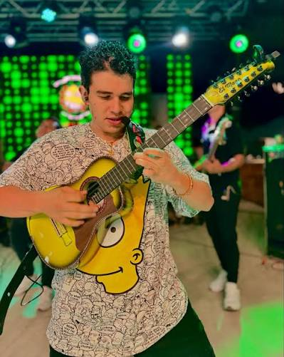

instrumentos
La musica carranguera se basa en 4 principales instrumentos: requinto,tiple,guitarra,rasca.

Requinto
El requinto carranguero es el instrumento rey de la música carranguera. Es el encargado de llevar la melodía principal, realizar las introducciones de las canciones y ejecutar los veloces "punteos" que le dan ese carácter alegre y bailable a este género musical, tiene 12 cuerdas de acero agrupadas en 4 órdenes triples (tres cuerdas por cada nota). Se afina un tono más alto que el tiple andino tradicional
.jpg)
Tiple
El tiple colombiano es el corazón armónico y el pilar rítmico de la música carranguera. Mientras el requinto se encarga de las melodías rápidas , el tiple es el instrumento que sostiene toda la estructura de la canción, marcando el compás y el sabor característico del baile campesino La diferencia principal se puede resumir así: el requinto canta (hace las melodías y solos) y el tiple acompaña (hace los acordes y el ritmo).
.jpg)
Guitarra
La guitarra acompañante es el pilar de los sonidos graves y la encargada de dar estabilidad a toda la agrupación carranguera. Mientras el requinto dibuja las melodías en la parte alta y el tiple rellena el centro con su rasgueo, la guitarra se sitúa en la base para marcar el bajo y los cambios de armonía
.jpg)
Rasca o Guacharaca
Si las cuerdas ponen la música, la rasca pone el movimiento. Su función es marcar el pulso y el ritmo acelerado de la rumba criolla y el merengue campesino. El sonido de la rasca va entrelazado con el rasgueo del tiple; juntos crean esa base rítmica "cascada" e inconfundible del género